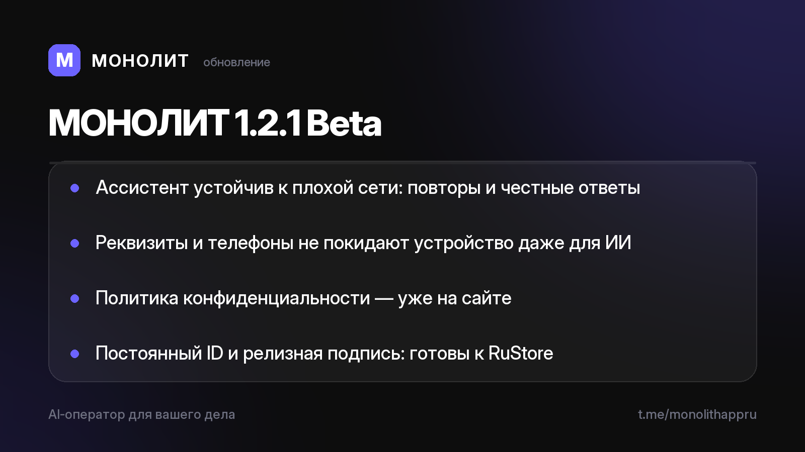

Дневник разработки · 03.07.2026
МОНОЛИТ 1.2.1 Beta — устойчивость и курс на сторы

🛡 Ассистент больше не боится плохой сети: если интернет моргнул, он сам делает до трёх повторов, а при неудаче честно объясняет ситуацию и возвращает ваш текст в поле ввода. Простые вопросы к базе работают вообще без сети.
🔒 Приватность стала глубже: телефоны, счета и ИНН теперь не покидают устройство даже при работе нейросети. В модель уходят обезличенные метки, реальные данные подставляются уже на вашем телефоне.
📄 Политика конфиденциальности опубликована на сайте — там честно и по-русски написано, где живут ваши данные (спойлер: у вас).
🏪 Готовимся к RuStore: у приложения теперь постоянный идентификатор и релизная подпись — технически к публикации всё готово.
Бета живёт быстро: вчера мессенджер, сегодня броня и документы. Хотите тестировать на Android? Напишите @sbphotoshoter — пришлю APK.
МОНОЛИТ — учёт заказов, клиентов и денег одной фразой. Windows и Android, бесплатная бета.
Скачать Читать канал